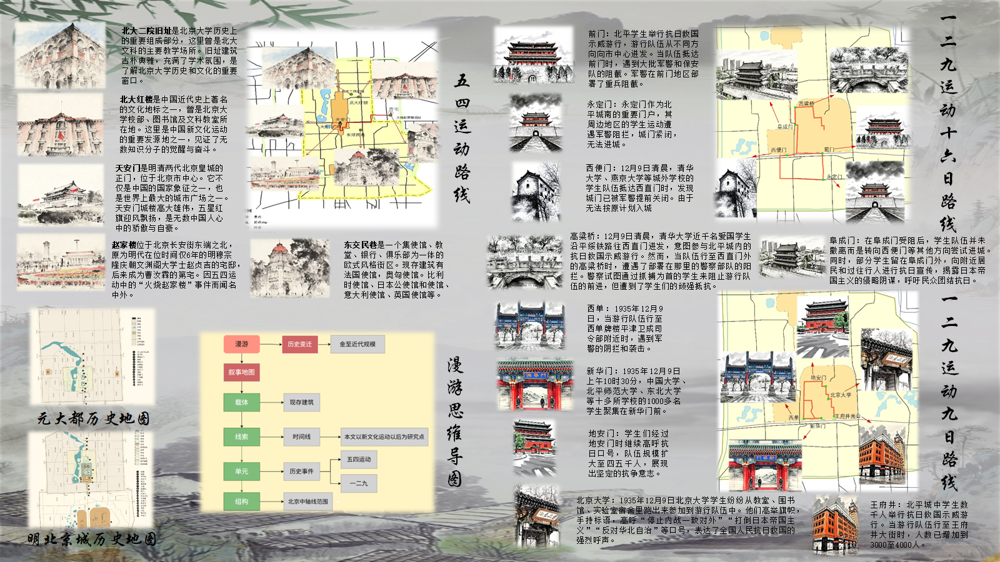
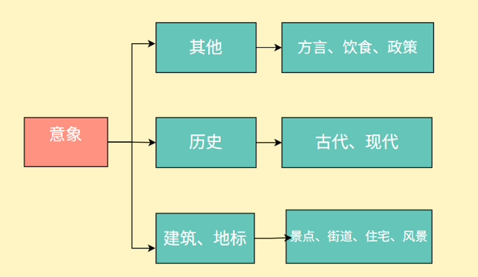
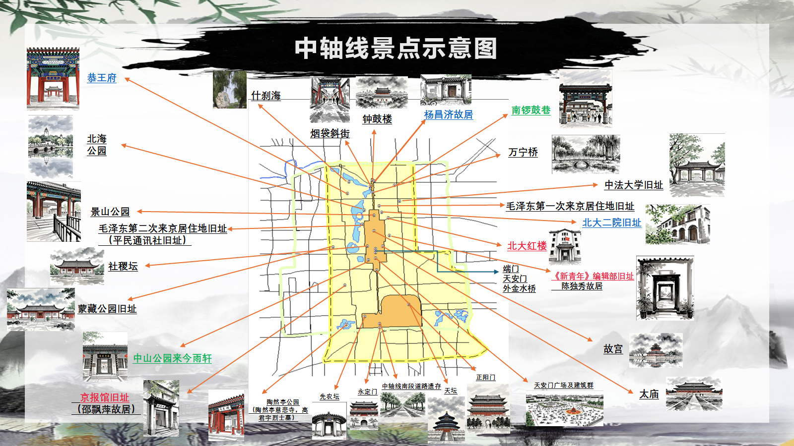
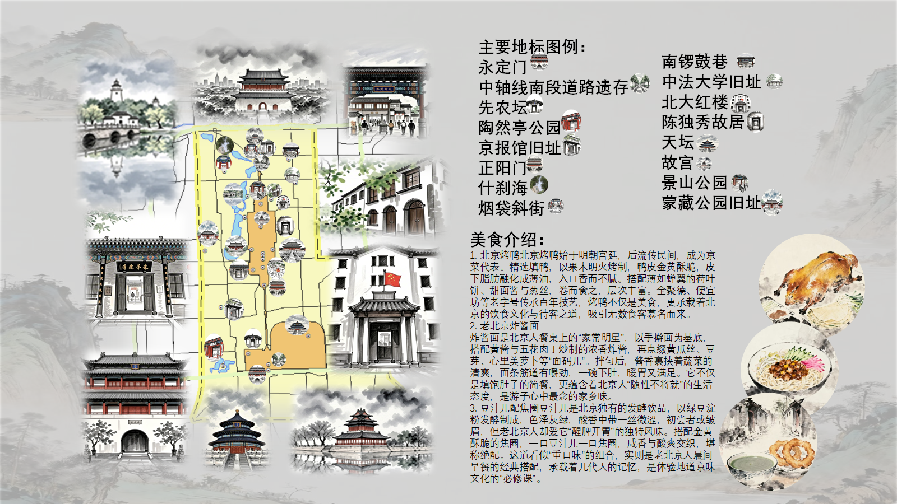
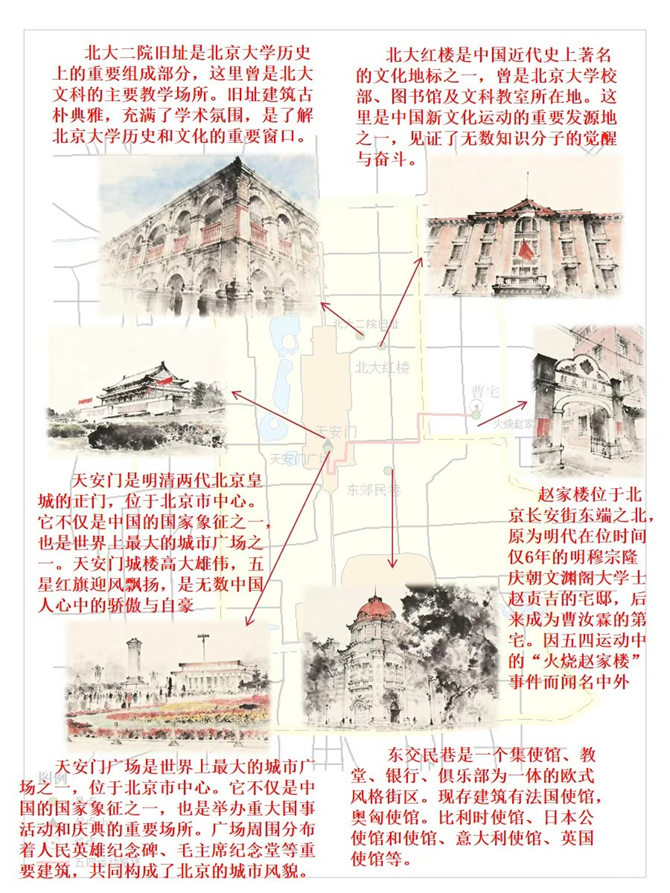
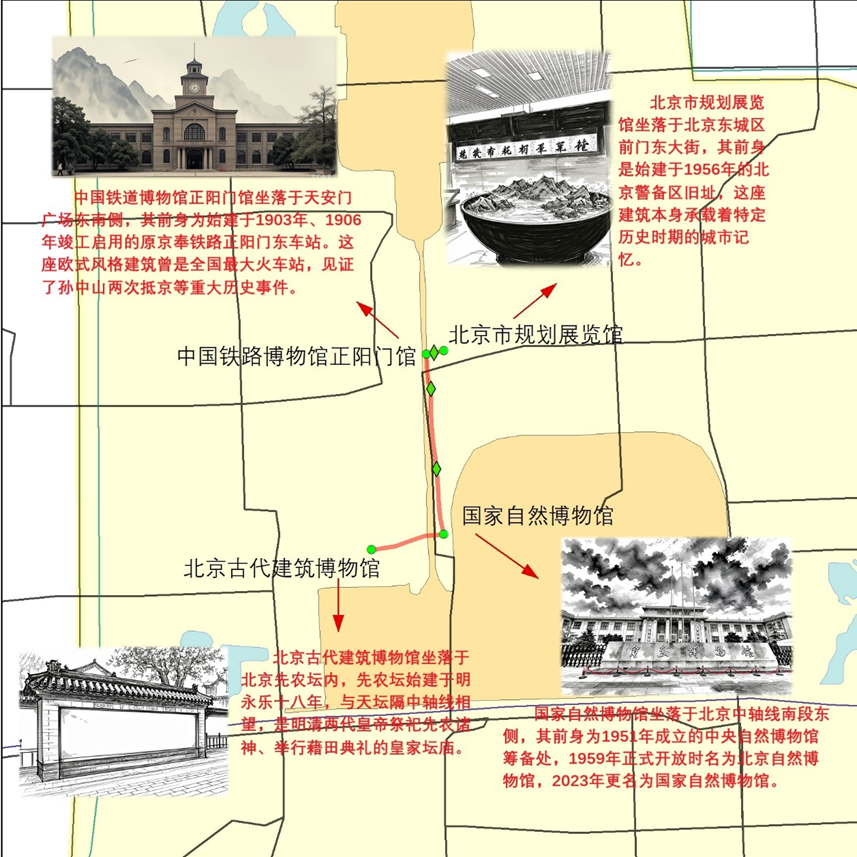

穿越时空，感受历史与现代的交融
探索北京中轴线的历史变迁与红色文化记忆

从意象、漫游到行走，三个维度深入探索北京中轴线的历史文化风貌
意象：代表了人们对解读城市文化的初级阶段，即碎片式的、不成体系的认识。


加载中...
点击下方按钮查看各景点的详细分析

北京中轴线作为北京古都的脊梁，承载着深厚的历史文化内涵。从永定门到钟鼓楼，这条轴线见证了北京城数百年的变迁。
我们通过文化意象的解读，深入挖掘中轴线背后的红色故事和历史记忆。
叙事地图与历史记忆

1919年的爱国运动，开启了中国新民主主义革命的序幕
1935年12月9日的抗日救亡运动
1935年12月16日的抗日救亡游行
五条路线实地探索
从历史到现代的穿越
文化与自然的交融
传统与创新的对话

记忆与现实的碰撞
过去与未来的连接
游客价值感知量化研究
基于LDA主题模型与BERT情感分析，对42个中轴线景点的15,000+条游客评论进行深度挖掘，涵盖情感分析、关键词提取、主题模型等多维度研究。